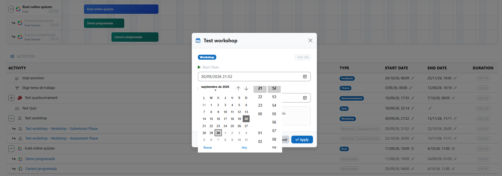
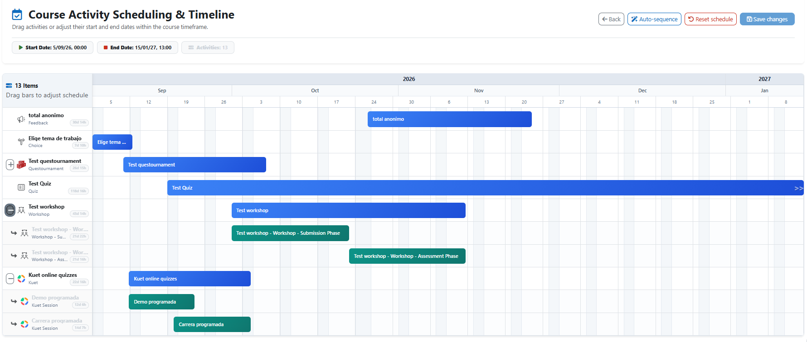
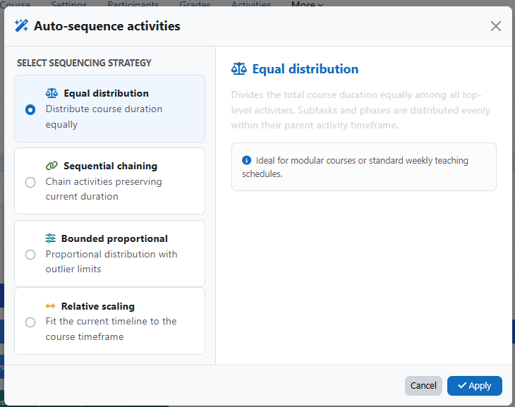
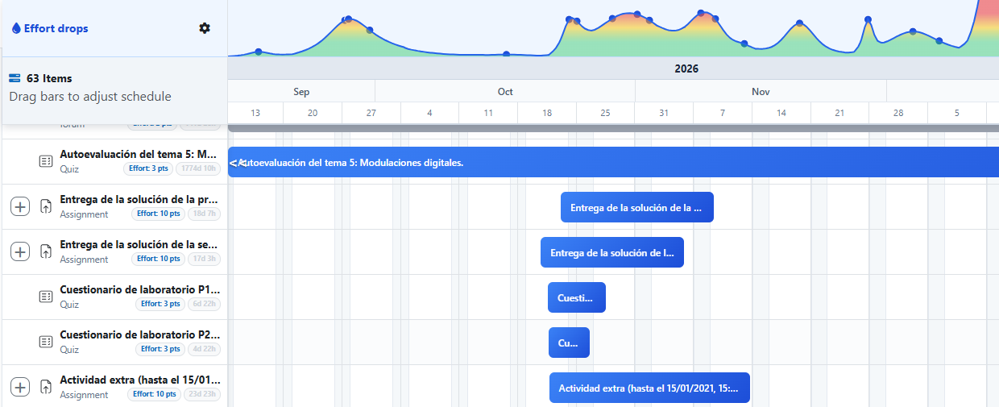
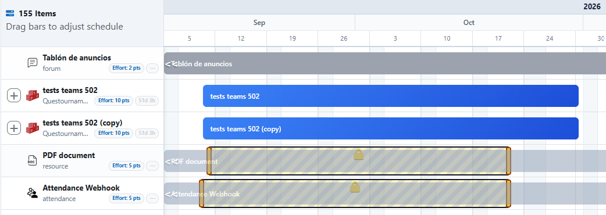
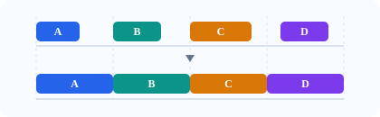
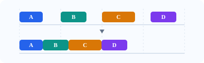
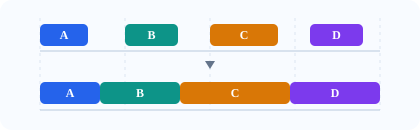
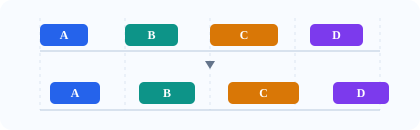

Arrastra, redimensiona, entiende
Mueve las actividades directamente sobre una timeline Gantt responsive y observa fechas, duración y fines de semana de un vistazo.
01Código abierto · GPLv3+
Una timeline Gantt para Moodle que hace claros, rápidos y seguros los cambios de fechas de un curso completo.

Una forma más tranquila de reprogramar
Accede a Reschedule dates desde el curso y observa cada actividad en contexto.
Arrastra barras, edita marcas de tiempo o aplica una estrategia automática.
Los cambios validados actualizan los subsistemas conectados de Moodle en una operación atómica.


Pensado para cambios reales
Mueve las actividades directamente sobre una timeline Gantt responsive y observa fechas, duración y fines de semana de un vistazo.
01Las actividades padre y sus subactividades se mueven juntas, con redimensionado proporcional para módulos complejos.
02Los eventos de calendario, fechas del gradebook y cachés permanecen sincronizados mediante adaptadores Moodle.
03Previsualiza y confirma el traslado de cada actividad a la sección de la semana en que empieza. Las fechas de la actividad no cambian.
04El gráfico suma el esfuerzo de las actividades fechadas del curso. Compara la presión del plazo con un ritmo planificado y detecta periodos de mucha carga.
Explorar el gráfico de esfuerzo ↗
Observa las restricciones de fecha de Moodle en el Gantt. Arrastra el candado o sus extremos para ajustar los intervalos de disponibilidad compatibles.

Elige la regla que mejor se adapte al curso. Auto-sequence distribuye el tiempo de las actividades fechadas mediante una de cuatro estrategias.




Una vista de la carga del curso
La cabecera del Gantt suma en cada punto el esfuerzo diario de las actividades que cuentan. Su peso representa el esfuerzo total de toda la curva; por ello, el máximo diario depende de la duración. El badge de esfuerzo aparece antes del de duración.
La presión del plazo crece lentamente y alcanza el máximo al final. El ritmo planificado sigue una campana diaria derivada de una curva acumulada en S. Ambos modelos tienen un breve decaimiento exponencial tras el final. El engranaje permite elegir el modelo y lo guarda en este navegador.
La escala vertical permanece fija entre 0 y 4 unidades diarias: verde hasta 1, amarillo en 2 y rojo desde 3. Las sumas mayores que 4 se calculan, aunque la gráfica las recorta visualmente.
La asignación de una tarea escolar abre una ventana de tiempo en la que interactúan dos ideas de gestión: la Ley de Parkinson (Parkinson, 1957) describe cómo el trabajo tiende a expandirse hasta ocupar el plazo disponible; el Síndrome del Estudiante (Goldratt, 1997), cómo se puede posponer el esfuerzo hasta que la fecha límite parece urgente. Juntos motivan el modelo en el que el esfuerzo diario crece lentamente al principio y con rapidez cerca de la entrega. El modelo planificado distribuye el esfuerzo diario en forma de campana, asociada a una curva en S de progreso acumulado. Ambos modelos incorporan un breve decaimiento exponencial después de la entrega.
La investigación relaciona los plazos lejanos con una mayor tendencia a posponer las tareas (Steel, 2007). En estudios longitudinales con estudiantes, la procrastinación se asoció con más estrés al final del curso y notas más bajas (Tice y Baumeister, 1997). El aumento exponencial de la gráfica es un modelo ilustrativo: no establece una concentración universal en las últimas 48 horas.
Para distribuir el esfuerzo de forma más saludable, conviene diseñar entregas parciales y secuenciales. Los plazos intermedios pueden reducir la procrastinación y mejorar el rendimiento (Ariely y Wertenbroch, 2002); la práctica distribuida también favorece la retención de lo aprendido (Cepeda et al., 2006).
Diseñado para Moodle
Los adaptadores dedicados manejan actividades complejas. El extractor autónomo cubre módulos estándar y un fallback genérico mantiene útiles las extensiones de terceros.
Leer las notas técnicas ↗¿Quieres probarlo?
Clona el plugin en tu instalación Moodle, ejecuta la actualización y empieza a planificar con una vista completa.
# desde la raíz de Moodle
git clone https://github.com/juacas/
moodle-local_reschedule.git local/reschedule
php admin/cli/upgrade.php